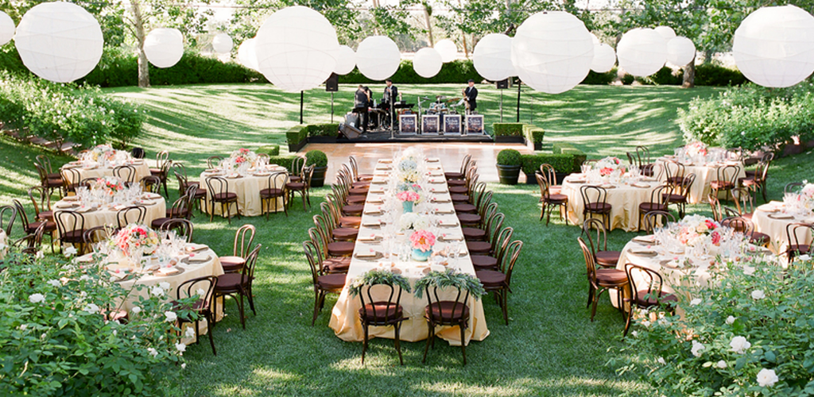

Portal de Eventos Sostenibles
Inicio
Listado de Eventos
Detalle del Evento
Evento Sostenible
Taller de Reciclaje Creativo
Taller de Reciclaje Creativo
Contacto
En este portal, encontrarán todo lo que necesitan saber sobre eventos relacionados con la sostenibilidad,
desde conferencias y talleres hasta actividades ecológicas. Nuestra misión es conectar a personas apasionadas por el medio ambiente y fomentar la participación en iniciativas sostenibles.
Eventos Destacados
